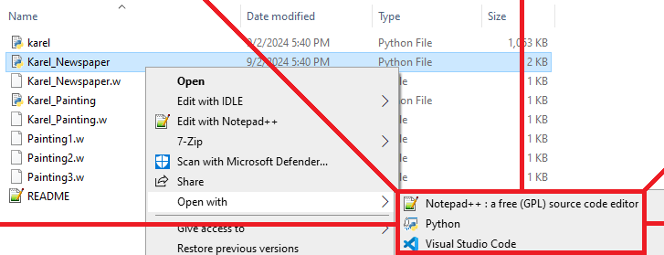

Karel 4
W2D2: 4 Sep
Announcements
- Starting this week... sections!
- 1 hour sometime on W or Th
- Mandatory: Each missed section is 5% off final grade (more or less)
- Help us help you - if you have a conflict, get sick, etc. - reach out ASAP.
- By MONDAY 11:59 PM: "Problem Set 1: Karel" assignment.
- One problem (probably) using "def" and "for"
- One problem using at least "while" and maybe the other three.
Today
- Running Karel review.
- Github classroom.
- Extracting Zip files.
- Running Karel.
- "Control Flow" again.
- The "def" (for "define") keyword and functions
- The "for" keyword and loops
- The "if" keyword and conditionals
- The "while" keyword and conditional loops
Course Webpage
- From the course webpage...
- Select "Problem Set 1: Karel"
Problem Set 1: Karel
- From "Problem Set 1: Karel"...
- Select the hyperlink to Github Classroom.
- It will be labeled as "Github Classroom Link"
- It will be of the form "https://classroom.github.com" and some trailing letters and numbers.

Github Classroom: Pre-Accept
- From the link to Github Classroom.
- Select .
- You will have to wait a moment.

Github Classroom: Post-Accept
- From ...
- Select the link to the assignment repository.
- It will be labeled as "Your assignment repository has been created."
- It will be of the form "https://github.com/<your @>/problem-set-1-karel-<your @>

Assignment Repository
- From the assignment repository....
- Select
Download ZIP
- From ...
- Select "Download ZIP"
- Your browser will begin downloading a file.

Browser Downloads
- From the browser pop-up for downloading a file...
- Select "problem-set-1-karel-<your @>-main"
- A new window will open with the ZIP file

ZIP File Window
- From the ZIP file window...
- Select "Extract: Compressed Folder Tools"

I believe on Mac you can simply doubleclick.
Compressed Folder Tools
- From the "Compressed Folder Tools"
- Select "Extract all"
- A menu will open
Extract Menu
- From the new menu (called "Select a Destination and Extract Files")
- Select "Extract"
- A new window will open with a folder (not a ZIP file) called "problem-set-1-karel-<your @>-main"
Folder Window
- From the new folder window
- Select "problem-set-1-karel-<your @>-main"
- A new window will open with a folder (not a ZIP file) called "problem-set-1-karel-<your @>-main"

Files Window
- From "problem-set-1-karel-<your @>-main" folder
- Right-click "Karel_Newspaper.py"
- Find a way to run "Karel_Newspaper.py", such via Python, in IDLE, or in VS Code
- Find a way to edit "Karel_Newspaper.py", such as via Notepad++, BBEdit, or in VS Code 
How I Code 1
- I leave open the folder to double-click "Karel_Newspaper.py" to test my code.
- I open "Karel_Newspaper.py" in Notepad++ to edit my code.
- Before doing anything else, I add a move() command to every function, just to make sure Karel moves at all.
- This is before I double-click:
How I Code 2
- This is after I double-click:
How I Code 3
- This is after I click the "play" button (Karel moves once for the single move in main):
How I Code 4
- I relaunch Karel every time I run (Karel seems very buggy to me)
- I sometimes leave Karel open while writing code to look at the world.
- As a rule, I do not write/change more than one line of code without testing.
How I Submit 1
- When I am done, I "submit" the homework via Github classroom.

How I Submit 2
- In Github classroom I double-click the relevant Python (.py) file
- In this case "Karel_Newspaper.py"

How I Submit 3
- From the relevant Python (.py) file's page on Github, select the (very tiny) edit button, donated with an icon that may look like a pen or pencil.

How I Submit 4
- This opens the Github online editor:

How I Submit 5
- Select all text in the Github online editor (via ctrl+a or cmd+a)

How I Submit 6
- Delete all text in the Github online editor (via Backspace "←" or Delete "DEL" )

How I Submit 7
- Select all text in Notepad++ or equivalent (via ctrl+a or cmd+a)

How I Submit 8
- Copy (ctrl/cmd+c) in Notepad++ and Paste (ctrl/cmd+c) in Github, or...
- Drag and drop:

How I Submit 9
- Select

Submitted!
- Select (with no "...")
- When you press that button, the work is "turned in"
- You may update it any time until the due date!

How do I know?
- You can make sure the homework is submitted by downloading the zip file again and making sure your code runs the way you expect!
- I would do this until you feel confident or just to set your mind at ease!
- You may update it any time until the due date!
- You can see here it says it is updated:
Today
- ✓ Running Karel review.
- ✓ Github classroom.
- ✓ Extracting Zip files.
- ✓ Running Karel.
- "Control Flow" again.
- The "def" (for "define") keyword and functions
- The "for" keyword and loops
- The "if" keyword and conditionals
- The "while" keyword and conditional loops
Control Flow
- 'def' functions
- Define a series of actions
- We can "call" functions
- Code in 'def' doesn't run unless called
- 'for' loop
- Code in the loop runs i times
- Good for repeated actions
- 'if' statement
- Code in the statement runs if Karel answers "yes" to some question
- Good if what you want to do depends on walls/beepers/etc
- 'while' loop
- Code in the statement runs as long as Karel answers "yes" to some question
- Good for complete tasks that require repeated actions.
| Does it happen more than once? | |||
| No | Yes (it's a loop) | ||
| Is it conditional (do we ask Karel a question)? |
No | ||
| Yes | |||
naskarel
- Imagine Karel on a 10x10 grid.
- Karel wants to pretend to be a NASCAR and race around the outside.
- The outside is always ten spaces long.
- We could do this:
import karel def main(): move() move() move() move() move() move() move() move() move() turn_left() # can only turn left move() # move to end move() move() move() move() move() move() move() move() turn_left() # can only turn left move() # move to end move() move() move() move() move() move() move() move() turn_left() # can only turn left move() # move to end move() move() move() move() move() move() move() move() turn_left()
naskarel: def
- Imagine Karel on a 10x10 grid.
- Karel wants to pretend to be a NASCAR and race around the outside.
- The outside is always ten spaces long.
- Or we could use define (at the bottom) and call (within main) "move_nine"
import karel def main(): move() # move to end move() move() move() move() move() move() move() move() turn_left() move() # move to end move() move() move() move() move() move() move() move() turn_left() move() # move to end move() move() move() move() move() move() move() move() turn_left() move() # move to end move() move() move() move() move() move() move() move() turn_left()import karel def main(): move_nine() turn_left() move_nine() turn_left() move_nine() turn_left() move_nine() turn_left() def move_nine(): move() # 1 move() # 2 move() # 3 move() # 4 move() # 5 move() # 6 move() # 7 move() # 8 move() # 9
Which is easier?
Anatomy of a def
|
import karel
def main():
move_nine() # call
turn_left()
move_nine() # call
turn_left()
move_nine() # call
turn_left()
move_nine() # call
turn_left()
def move_nine(): # define
move() # 1
move() # 2
move() # 3
move() # 4
move() # 5
move() # 6
move() # 7
move() # 8
move() # 9
|
Which is easier?
naskarel: for
- Imagine Karel on a 10x10 grid.
- Karel wants to pretend to be a NASCAR and race around the outside.
- The outside is always ten spaces long.
- We could for loops to move across all ten spaces.
import karel def main(): move() # move to end move() move() move() move() move() move() move() move() turn_left() move() # move to end move() move() move() move() move() move() move() move() turn_left() move() # move to end move() move() move() move() move() move() move() move() turn_left() move() # move to end move() move() move() move() move() move() move() move() turn_left()import karel def main(): for i in range(9): move() turn_left() for i in range(9): move() turn_left() for i in range(9): move() turn_left() for i in range(9): move() turn_left()
Which is easier?
naskarel: double or nothing
- Imagine Karel on a 10x10 grid.
- Karel wants to pretend to be a NASCAR and race around the outside.
- The outside is always ten spaces long.
- We use a for loop in a function to make nicer code...
import karel def main(): move() # move to end move() move() move() move() move() move() move() move() turn_left() move() # move to end move() move() move() move() move() move() move() move() turn_left() move() # move to end move() move() move() move() move() move() move() move() turn_left() move() # move to end move() move() move() move() move() move() move() move() turn_left()import karel def main(): move_nine() turn_left() move_nine() turn_left() move_nine() turn_left() move_nine() turn_left() def move_nine(): for i in range(9): move()
Which is easier?
naskarel: double or nothing
- Imagine Karel on a 10x10 grid.
- Karel wants to pretend to be a NASCAR and race around the outside.
- The outside is always ten spaces long.
- This makes it easier to see we can loop in main as well!
import karel def main(): move_nine() turn_left() move_nine() turn_left() move_nine() turn_left() move_nine() turn_left() def move_nine(): for i in range(9): move()import karel def main(): for i in range(4): move_nine() turn_left() def move_nine(): for i in range(9): move()
Which is easier?
naskarel: 40 vs 7 lines
import karel
def main():
move() # move to end
move()
move()
move()
move()
move()
move()
move()
move()
turn_left()
move() # move to end
move()
move()
move()
move()
move()
move()
move()
move()
turn_left()
move() # move to end
move()
move()
move()
move()
move()
move()
move()
move()
turn_left()
move() # move to end
move()
move()
move()
move()
move()
move()
move()
move()
turn_left() |
import karel
def main():
for i in range(4):
move_nine()
turn_left()
def move_nine():
for i in range(9):
move()
|
Today
- ✓ Running Karel review.
- ✓ Github classroom.
- ✓ Extracting Zip files.
- ✓ Running Karel.
- "Control Flow" again.
- ✓The "def" (for "define") keyword and functions
- ✓The "for" keyword and loops
- The "if" keyword and conditionals
- The "while" keyword and conditional loops
Unlost
- Imagine Karel_Newspaper but with variable houses.

What if this were 2x2?
(I was talking to my elders about home-ownership this weekend 😭)
Unlost
- We cou
What if this were 2x2?
(I was talking to my elders about home-ownership this weekend 😭)
unlost
- We could:
- Drop a beeper
- Cling to the left wall until we find a beeper.
- Pick it up and turn around.
- Cling to the right wall until we find a beeper.
|
Not necessarily easier, but more general.
On the homework, you can't drop a beeper (you have none) - I'm not doing the problem for you.
unlost
import karel
def main():
put_beeper()
cling_left_until_beeper()
pick_and_rev()
cling_right_until_beeper()
pick_beeper()
def cling_left_until_beeper():
move()
def pick_and_rev():
move()
def cling_right_until_beeper():
move() |
|
unlost
import karel
def main():
put_beeper()
cling_left_until_beeper()
pick_and_rev()
cling_right_until_beeper()
pick_beeper()
def cling_left_until_beeper():
# this will hit walls
while no_beepers_present():
move()
def pick_and_rev():
move()
def cling_right_until_beeper():
move() |
|
unlost
import karel
def main():
put_beeper()
cling_left_until_beeper()
pick_and_rev()
cling_right_until_beeper()
pick_beeper()
def cling_left_until_beeper():
while no_beepers_present():
if front_is_blocked():
# avoid walls
turn_right()
# or 3 left
move()
def pick_and_rev():
move()
def cling_right_until_beeper():
move() |
|
unlost
import karel
def main():
put_beeper()
cling_left_until_beeper()
pick_and_rev()
cling_right_until_beeper()
pick_beeper()
def cling_left_until_beeper():
while no_beepers_present():
if front_is_blocked():
# avoid walls
turn_right()
# or 3 left
if left_is_clear():
# 'cling' left
turn_left()
move()
def pick_and_rev():
move()
def cling_right_until_beeper():
move() |
|
unlost
- Like this:

unlost
- Try it:
def main(): while no_beepers_present(): if front_is_blocked(): # avoid walls turn_left() turn_left() turn_left() # or 3 left if left_is_clear(): # 'cling' left turn_left() move()
Exercise
- Do "Problem Set 1: Karel"
- Use comments
- The first problem "newspaper" benefits from functions, and perhaps for loops
- It is possible, but annoying, to do without either
- The second problem, "painting" benefits from 'while' loops (and could use 'if')
- I used four (4) 'while' loops, and no 'if' statements or 'for' loops
Announcements
- Starting this week... sections!
- 1 hour sometime on W or Th
- Mandatory: Each missed section is 5% off final grade (more or less)
- Help us help you - if you have a conflict, get sick, etc. - reach out ASAP.
- By MONDAY 11:59 PM: "Problem Set 1: Karel" assignment.
- One problem (probably) using "def" and "for"
- One problem using at least "while" and maybe the other three.